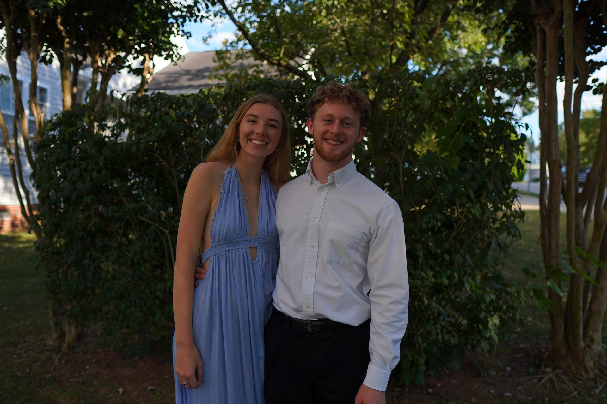

Bio
I am originally from Overland Park, Kansas, and am currently in my last semester of undergrad. I came to NC State as a nuclear engineer, drawn by the promise of reliable, clean,
and abundant energy. Through reflection, I realized that it was ultimately the application and integration of nuclear power that
excited me most. This understanding pushed me to explore a career in electrical engineering.
My passions lie in the energy industry as a whole—not only the technologies, but also the economics and policies that power our world.
It is here that I wish to further cultivate my career, seeking out opportunities for innovation.
During my time in electrical engineering, I have also fallen in love with embedded systems, analog electronics, and programming in general. It has been deeply rewarding to grow in these
areas through elective courses, projects, and outside learnings.
Outside of academics, I enjoy competing in powerlifting and spending time with friends.
This Website
This website is a way for me to capture my personal, professional, and academic experiences. It was made as a fun side project, and development is currently ongoing.
These webpages were made in HTML
and can be found in the repository here.
I also attempted to format everything in the style of LaTeX.1
| Page | Contents |
|---|---|
| Home | Bio and overview |
| Courses | Favorite classes, degree timeline, and transcript |
| Projects | School and personal projects |
| Experience | Internship summaries |
| Trips | School and backpacking trips |
| Date | Update |
|---|---|
| Mar. 30th | Home page update |
| Feb. 23rd | Courses development begins |
| Feb. 12th | Image compression |
| Feb. 6th | Trips page completed |
| . . . | |
Personal
Working On
Trying to survive this semester.. but mostly:- Senior design
- ECE 306, embedded systems
- This website on the side
Lifting
Thought it might be cool to throw my maxes here. Not to be too shameless, but if you want to see more, check out my instagram!
| Event | Meet2 | Gym |
|---|---|---|
| Squat | 512.5 lbs / 232.5 kg | 529 lbs / 240 kg |
| Bench | 314 lbs / 142.5 kg | 330 lbs / 150 kg |
| Deadlift | 529 lbs / 240 kg | 551 lbs / 250 kg |
Reading
Once I have a free weekend I'll make a Goodreads account..
Currently Reading
- The Great Heist by Andrew Badger and David Shedd
- Can't Hurt Me by David Goggins (relistening to the audiobook)
Last Read
- River of Darkness by Buddy Levy
- Robinson Crusoe by Daniel Defoe (audiobook)
- The Ruthless Elimination of Hurry by John Comer
- Catch-22 by Joseph Heller
- Mother of God by Paul Rosalie
1. The library, LaTeX.css, was used extensively for this project.
2. You can find my meet numbers on my OpenPowerlifting page.